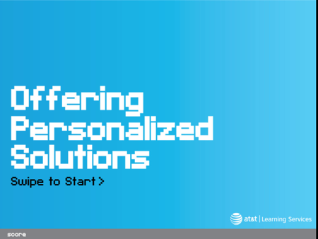
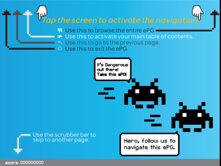
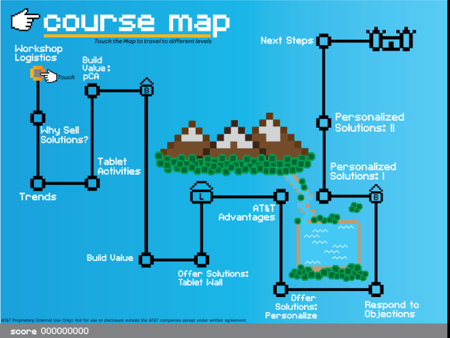

This one day workshop drove up to 15% increases in product sales and customer satisfaction scores, when comparing employees completing the course to those who did not. Learners enjoyed a mix of activities: hands-on discovery, guided group interactions, and practice sessions with instructor coaching and feedback.
The project team included Matt Yantzi, Jay Fallon, Rich Spohnholz, Patrick Neff, 60+ trainers covering all 50 states, along with executive sponsors and stakeholders from AT&T’s Marketing, Sales Operations and Emerging Devices organizations.
We used Adobe tools to design, develop and deliver the content to iPads and Android tablets. As shown in the sample screens below, we also had fun including game-like elements and achievements to increase employee engagement with the material.

